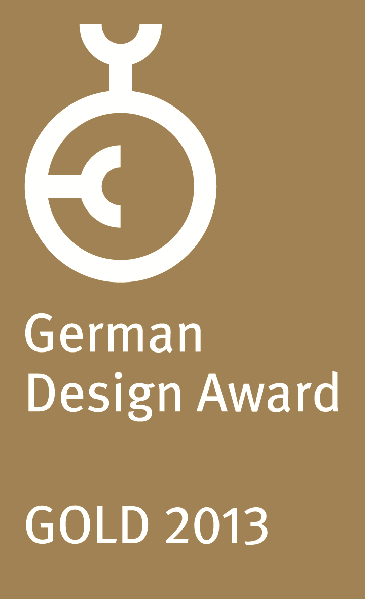
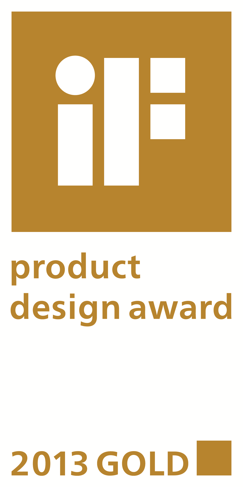
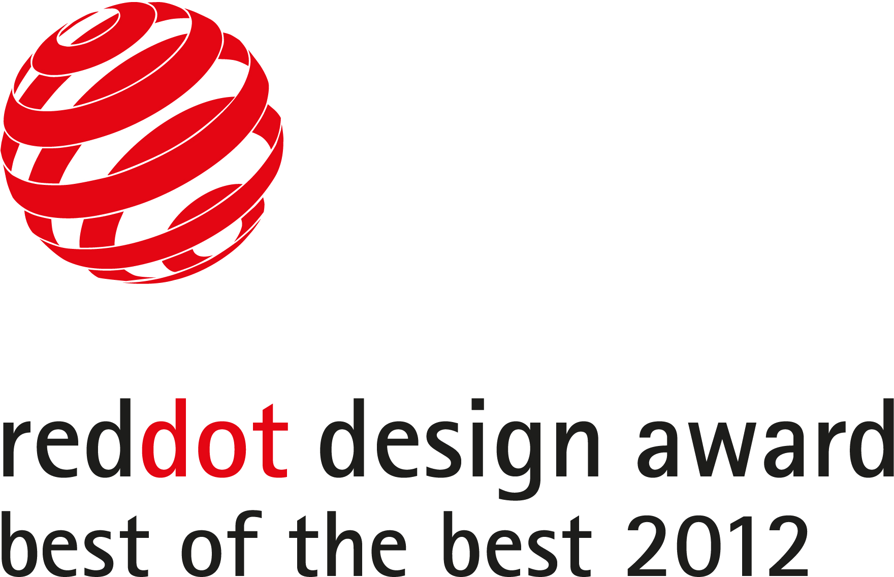
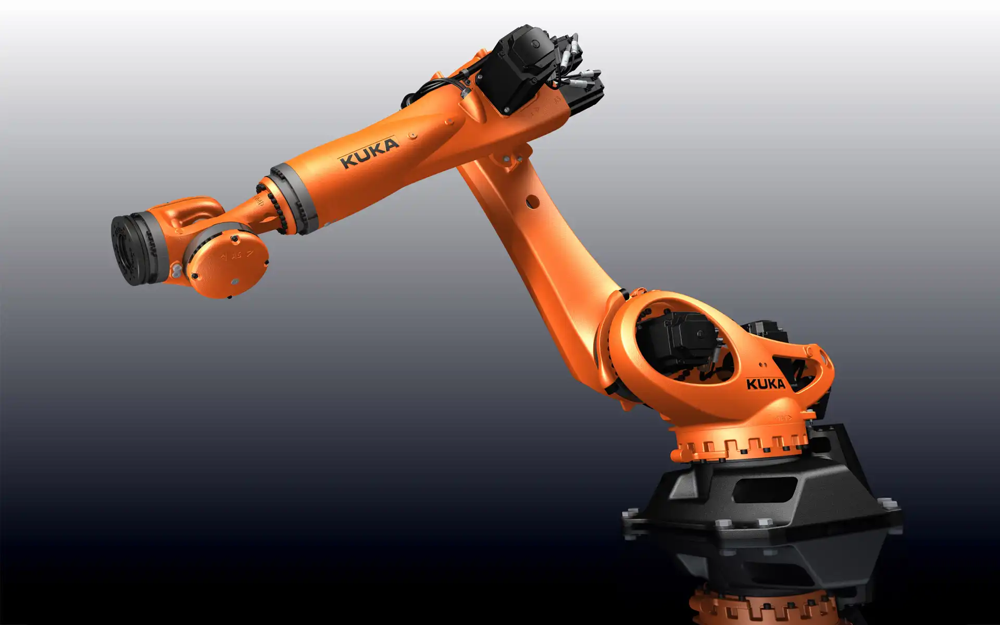
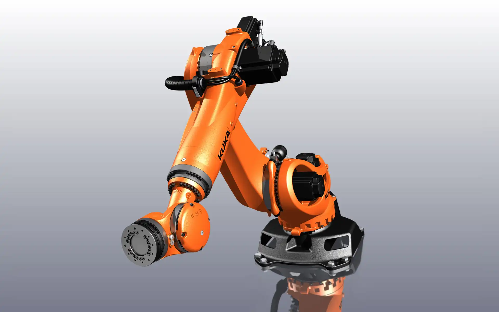
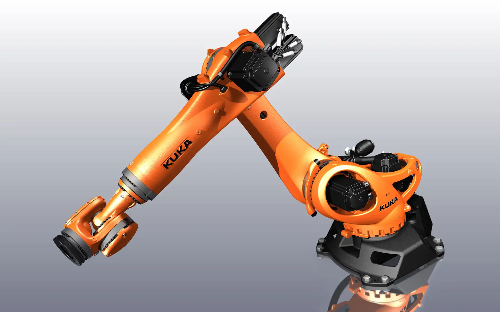

KUKA KR 270 Quantec
Industrial Robot
KUKA KR 270 Quantec
Idustrieroboter
iF Gold Statement
"This industrial robot has almost human features; its lines of force express the movements of the human
body and correspond to the muscles. Art and technology come together very well here. The result is an
extremely precise tool that is nevertheless lightweight and therefore saves energy. The sound construction
also leads to a very appealing design aesthetic."
The robot KR 270 Quantec ultra can move to its target point with an accuracy of ±0.06 mm within seconds,
making it ideal for spot welding, assembly and packaging tasks. The versatility and flexibility of this
robot mean that it is at home both in the automotive sector and in general industry.
The design objective was to give the robot a clean, robust appearance and to visualize its dynamic
skills. After all, a machine which can accelerate and change direction so quickly must not look clumsy
or carry any superfluous weight, but should rather be as agile and lithe as an athlete. Organically
formed, high-strength components give the robot a dynamic appearance and give visual expression to the
performance capability and agility of the machine. From a mechanical point of view, they also ensure
high torsional and bending stiffness — important for precise, reliable operation. Smooth
transitions
between structural shapes improve the mechanical force transmission and increase the dynamic properties.
The manufacturing process for the housing components was optimized for this application: ductile cast
iron for components subjected to major forces and cast aluminum for dynamically stressed lightweight
components. A focused effort to minimize the amount of material used saves costly raw materials and
helps to preserve the environment. Another benefit is that the robot’s material costs are decreased. Its
weight, too, is greatly reduced, thereby increasing the acceleration values. This shortens the motion
cycles — an important aspect for the user — and reduces energy consumption.
Selić Industriedesign service: Design consultation, design concept, design sketches, CAD design support,
CAD freeform modeling, design refinement, processing of design data for the engineering department
iF Gold Statement
"Dieser Industrieroboter hat fast menschliche Züge; seine Kraftlinien drücken die Bewegungen des
menschlichen Körpers aus und entsprechen den Muskeln. Kunst und Technik kommen hier sehr gut zusammen. Das
Ergebnis ist ein äußerst präzises Werkzeug, das dennoch leicht ist und dadurch Energie spart. Die gute
Konstruktion führt auch zu einer sehr ansprechenden Design Ästhetik."
Der Roboter KR 270 Quantec ultra kann sekundenschnell und hochpräzise mit einer Genauigkeit von ±0,06 mm
sein Ziel zum Punktschweißen, Montieren und Verpacken ansteuern. Aufgrund seiner Vielseitigkeit und
Flexibilität ist dieser Roboter sowohl in der Automotive-Branche als auch in der allgemeinen Industrie
zu Hause.
Das gestalterische Konzept war, dem Roboter ein kerniges, entschlacktes Aussehen zu geben und seine
dynamischen Qualitäten auch optisch zu zeigen. Denn eine Maschine, die derart beschleunigt und dabei so
wendig ist, darf nicht schwerfällig wirken und keine überflüssigen Pfunde mitschleppen, sondern muss
agil und gelenkig sein wie ein Athlet. Organisch gestaltete, kraftvolle Bauelemente geben dem Roboter
ein lebendiges Erscheinungsbild und visualisieren die Leistungsfähigkeit und Beweglichkeit der Maschine.
Zugleich sorgen sie mechanisch für hohe Biegefestigkeit und Torsionssteifigkeit, wichtig für präzises
und zuverlässiges Arbeiten. Fließende Formübergänge begünstigen den mechanischen Kraftfluss und
erhöhen die physikalischen Dynamikeigenschaften. Das Fertigungsverfahren der Gehäuseteile wurde für den
Anwendungsfall optimiert: Sphäroguss für Komponenten mit hoher Krafteinwirkung, Aluguss für dynamisch
beanspruchte Leichtbaukomponenten. Ein gezielt sparsamer Materialeinsatz schont wertvolle Rohstoffe und
damit die Umwelt. Positiver Effekt: Materialkosten des Roboters sinken. Auch sein Gewicht verringert
sich deutlich und erhöht damit die Beschleunigungswerte. Die für den Anwender wichtigen Bewegungszyklen
werden verkürzt und der Energieverbrauch gesenkt.
Selić Industriedesign Dienstleistung: Designberatung, Designkonzept, Designentwürfe, CAD-Design
Unterstützung, CAD-Freiform-Modellierung und Detailgestaltung, Aufbereitung von Designdaten für die
Konstruktion



Images and videos © KUKA-Roboter GmbH
Images © Selić Industriedesign